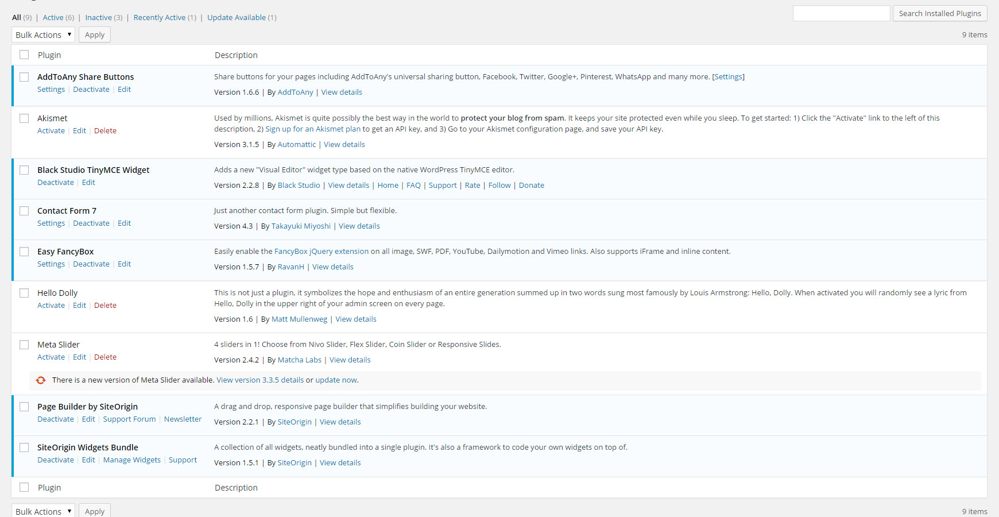

Webutvikling Oblig 5 - Murat Demirel
Oppgave 1
Lag din egen Wordpress-site der du tester ut CMS-systemet. Det å lage egne
templates fra bunnen kan være noe komplisert, så det holder for dette prosjektet
om dere modifiserer på en av de innebygde.
Det letteste er om dere kjører Wordpress i deres egen lokale WAMP(/MAMP)-
server (JFR forelesninger eller utallige guides på nett). IKKE kjør på
wordpress.com siden dette er en nedskalert versjon. Serveren ask.hiof.no gir
dere heller ikke nok rettigheter til en god installasjon, så det må i såfall legges
på en server dere administrerer.
Siden dette er den eneste oppgaven i denne obligen forventer vi at det er gjort
en god del rundt tilpassing av templates + innhold. Som alltid trenger dere ikke
ha fornuftig innhold, men dere skal ha testet ut å fylle nettstedet med en god del
innholdssider av ulike typer og testet ulik funksjonalitet.
Som et minimum skal dere teste ut minst en widget og en plugin (i tillegg til
widget) som ikke følger med i pakka...
NB!
Innlevering består i å lage et notat der dere beskriver prosessen med å sette opp
siten. Beskriv valg dere har gjort for å sette opp siden. Ha med skjermdumper
av alle essensielle steg. Dere trenger altså IKKE levere den tenkiske løsningen.
Lever som PDF. Merk at dere må dokumentere mens dere gjør ting. Altså ikke
i etterkant. Det som ikke er helt standard i installasjonen skal også dokumenteres.
Installasjonsmåten som ble gjennomført
1: Første jeg gjorde var å gå laste ned WampServer på nettsiden deres: WampServer

2: Deretter fulgte jeg alle instruksene til WampServer for å installere den.
3: Etter det gikk jeg på websiden til Wordpress og lastet ned en zip. fil av Wordpress Wordpress

4: Da begge filene endelig var på pcen, fikk jeg WampServeren online og trykket på phpMyAdmin

5: Neste steg var å gå på Databases og trykke på "Opprett" etter å ha fylt navnet på databasen.

6: Etter at databasen var i orden overførte jeg wordpress mappen inn i C:/wamp/www
7: Nå var det bare å gå på http://localhost/wordpress for deretter å trykke på "Lets go!"
8: Etter det måtte jeg fylle feltene med nødvendig informasjon og trykke "Submit"
9: Da jeg trykket på "Submit" knappen fikk jeg til slutt kjøre installasjonen.
10: Etter kort tid fikk jeg flere nye felter å fylle som gikk relativt raskt.

11: Til slutt logget jeg meg inn og begynte på oppgaven.
Jeg har gjort en del nye endringer med siden.
Satt inn menyelement, satt inn video, satt inn bilder, satt inn flere nye sider, nye plugins, nye widgets, facebook box,
box for andre sosiale medier, satt inn google maps som jeg linket til halden. Deretter satt jeg flere nye testsider med
litt forskjellig innhold, bytta bakgrunnsbilde, satt inn forskjellig oppsett på themen og jeg har endet mye på oppsettet
av siden generelt.
Her er noen screen-shots
Slik ser hovedsiden ut
Slik ser Pagebuilder ut

Slik ser menyen ut
Her er alle plugins'ene

Her er alle widgets'ene
Slik ser dropdown menyen ut
Slik ser menyen ut
Her er en av testsidene
Her er fotogallery part 1
Her er fotogallery part 2
Sånn ser sidene ut
Her er en annen testside
Oppgave E.1
Hvilke konkrete råd om sikkerhet vil du gi til de som skal sette opp og drifte et CMS?
Begrunn rådene med hvilke trusler de skal motvirke der det er nødvendig
Svar: Grunnen til at så mange CMS platformer blir angrepet er fordi mange tror at for eksempel Wordpress som
ofte blir brukt har en form for sikkerhet. Problemet her er jo at alle CMS systemer har lite eller ingen
form for beskyttelse fordi dem er bygd med på open source tanken. Derfor er sikkerhet veldig viktig i CMS
siden dem veldig ofte blir utsatt for hacking osv. Første som burde gjøres i en CMS system er å gjevnlig
ta backup. Hvis systemet blir utsatt for hacking eller andre angrep kan man raskt erstatte innhold osv.
Andre ting som kan gjøres er å passe på at plugings, themes osv er oppdatert slik at vi hele tiden har
siste versjon. Grunnen til det er at de som for eksempel jobber på wordpress alltid prøver å ordne opp i
"sikkerhetshull" i systemet. Siste jeg vil anbefale er å bruke troverdige kilder. Grunnen til det sier seg
selv egentlig.
Oppgave E.2
Gi en mest mulig presis forklaring på hva et CMS er. Hvilke fordeler og ulemper ser du
ved å benytte et CMS for henholdsvis utviklere og sluttbrukere?
Svar: CMS eller Content Management System som det heter, består av programmering som gir instrukser til nettleseren
din om hvordan den skal reagere for deg. CMS er mye mer fleksibel enn en statisk webside. Du kan blant annet trykke
på meny knapper og linker. Du kan søke i søkebokser osv. Andre ting som gjør CMS bra er at det er enkelt å bytte.
tenk at du har lyst til å oppdatere websiden din til en halloween tema. Etter en stund kan du veldig enkelt bytte om
siden din til gamle versjonen uten problem. Ulemper med CMS kan jo være det vi har gått gjennom tidligere som er
sikkerhet. Siden CMS kom ut har den vært utsatt for utrolig mange angrep fra hackere osv. Andre ulemper kan være
at CMS systemer alltid kommer med litt "bloat" som vil medføre at websiden blir tregere.